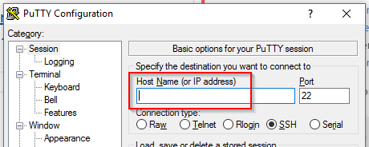

Sonstiges
Back to Basics - Assembler Hello World
Lerne, wie ein Computer auf unterster Ebene funktioniert
Erste Schritte mit Assembler-Programmierung
Ziel der Übung
Normalerweise programmieren wir im CoderDojo mit sogenannten höheren Programmiersprachen wie C#, Java, Python oder JavaScript. Auf unterster Ebene versteht ein Computer diese Sprachen aber nicht. Er kann nur mit Maschinensprache umgehen. Diese Befehle kann der Prozessor deines Computers direkt ausführen.
In dieser Übung probieren wir, ein Programm direkt in Maschinensprache zu programmieren. Dazu verwenden wir eine Assemblersprache. Auch wenn du später selten Assembler programmieren wirst, hilft dir diese Übung, besser zu verstehen, was im Hintergrund passiert.
In dieser grundlegenden Übung stehen die einfachsten Grundlagen von Assembler sowie die Tools, die du dafür brauchst, im Mittelpunkt. Später werden wir uns mit mehr Assembler-Kommandos beschäftigen.
Systemvoraussetzungen
Systemabhängigkeit
In Assembler schreibt man Programme für einen bestimmten Prozessor und ein bestimmtes Betriebssystem. Ein Assemblerprogramm, das man z.B. für einen Windows-Computer mit Intel-Prozessor schreibt, kann man nicht ohne weiteres unter Linux auf einem ARM-Prozessor ausführen.
Diese Übung setzt einen Intel-Prozessor und Linux (z.B. Ubuntu) voraus.
Entwicklungsumgebung im CoderDojo
Im CoderDojo wird dir ein Mentor einen Zugang zu einer fertigen Linux-Maschine geben. Zum Zugriff brauchst du PuTTY. Lade die Software herunter, installiere sie und frage deinen CoderDojo-Mentor um die Zugangsdaten.
Eigene Entwicklungsumgebung
Wenn du von einem Mentor die Zugangsdaten zu einer fertigen Entwicklungsumgebung bekommen hast, kannst du dieses Kapitel überspringen.
Möchtest du die Entwicklungsumgebung auf deinem Computer haben? Das ist natürlich möglich. Die gesamte, verwendete Software ist Open Source und kostenlos.
Damit Linux bei dir läuft, hast du folgende Möglichkeiten (falls du nicht sicher bist, frag einen CoderDojo Mentor um Hilfe):
- Du hast einen Computer, der sowieso Ubuntu verwendet? Dann kannst du sofort loslegen.
- Du hast einen Windows-Computer, auf dem Hyper-V installiert ist bzw. installiert werden kann?
- Lade Ubuntu Server aus dem Internet herunter. Du bekommst eine .iso-Datei
- Installiere eine neue, virtuelle Maschine in Hyper-V mit Ubuntu Server. Falls du dabei Hilfe brauchst, frag einen CoderDojo Mentor (Schritt-für-Schritt-Anleitung)
- Du hast einen Windows- oder Mac-Computer, auf dem Hyper-V nicht funktioniert?
- Installiere VirtualBox auf deinem Computer.
- Lade Ubuntu Server aus dem Internet herunter. Du bekommst eine .iso-Datei
- Installiere eine neue, virtuelle Maschine in Hyper-V mit Ubuntu Server. Falls du dabei Hilfe brauchst, frag einen CoderDojo Mentor (Schritt-für-Schritt-Anleitung)
- Du kannst oder möchtest Ubuntu Linux nicht auf deinem Computer installieren? Du kannst eine virtuelle Maschine in der Azure Cloud verwenden (Schritt-for-Schritt-Anleitung).
- Achtung! Virtuelle Maschinen in der Cloud sind kostenpflichtig. Du brauchst die Hilfe deiner Eltern, um mit einer Kreditkarte den Zugang freizuschalten.
Wenn du deinen Ubuntu Linux Server installiert hast, musst du die für die Übung notwendige Software einrichten. Folgendes müssen wir installeren:
- NASM - The Netwide Assembler
- GCC - The GNU Compiler Collection
- GCC wird unter Ubuntu Linux im Paket build-essentials installiert. Starte daher
sudo apt-get install build-essential - Dokumentation
- GCC wird unter Ubuntu Linux im Paket build-essentials installiert. Starte daher
- GDB - The GNU Project Debugger
- GDB wird unter Ubuntu Linux im Paket
gdbinstalliert. Start dahersudo apt-get install gdb - Dokumentation
- GDB wird unter Ubuntu Linux im Paket
- Optional kann man Syntax Highlighting für Assemblercode in vim, dem Editor, den wir verwenden werden, installieren.
Das gesamte Installationsscript findest du in install-dev-tools.sh.
Hinweise für das Mentorenteam bzw. Coder mit umfangreichem Basiswissen:
- Im Ordner create-ubuntu-scripts findet ihr ein ARM-Template mit zugehörigem PowerShell-Script zum automatischen Anlegen von vorkonfigurierten VMs in Azure.
- Es gibt auch ein Dockerfile, mit dem ihr ein Docker image erstellen könnt, das die oben genannten Tools enthält (
docker build -t nasm .). Dazu noch ein Hinweis: Wenn ihr die Übung von unten in einem Docker Container durchführen wollt, braucht ihr folgendes run Statement:docker run -it --rm --security-opt seccomp=unconfined nasm /bin/bash. Beachtet die Option--security-opt seccomp=unconfined. Sie ist nur fürgdbnotwendig.
Zum Unbuntu Linux Server verbinden
Starte PuTTY
Im Feld Host Name (or IP address) gibst du die IP-Adresse deines Ubuntu Linux Servers ein (im CoderDojo bekommst du die IP-Adresse vom Mentorenteam).
Melde dich mit Benutzer und Passwort an (im CoderDojo bekommst du Benutzer und Passwort vom Mentorenteam)
Probiere, ob du den Assembler starten kannst, indem du das Kommando
nasm -vausführst. Du müsstest die Version von NASM angezeigt bekommen.
Klappt alles? Dann können wir anfangen zu hacken.
Erste Übung: Hello World
Als erstes möchten wir das typische Kennenlernprogramm schreiben, das man in jeder Programmiersprache programmiert: Hello World.
Starte den Editor vim mit dem Kommando
vim. vim ist ein grundlegender Editor, der bei Bedarf auf jeden System installiert werden kann.Mache dich gemeinsam mit dem Mentorenteam vom CoderDojo mit vim vertraut.
- Bei Bedarf findest du eine gute Einführung in vim im Internet
- Nützlich ist auch ein Cheat Sheet
Erstelle mit vim die Datei
hello.asm, indem du das Kommandovim hello.asmeingibst.Gib das Beispiel-Assemblerprogramm in die Datei
hello.asmein.SECTION .data ; DATEN msg: db "Hello World",10 ; Diesen Text wollen wir ausgeben ; Die 10 am Ende bedeutet "naechste Zeile". ; Es handelt sich um einen ASCII-Code (Details ; siehe http://www.asciitable.com/) len: equ $-msg ; Wir berechnen die Laenge des Text, indem ; wir die Speicheradresse von msg von der ; aktuelle Speicheradresse ("$") subtrahieren SECTION .text ; PROGRAMMCODE global main ; Das Programm startet bei "main" main: mov edx, len ; In edx tragen wir die Laenge ein. ; edx ist ein sogenanntes "Register" (Details siehe ; https://de.wikipedia.org/wiki/Register_(Computer)) mov ecx, msg ; In ecx die Adresse des Textes mov ebx, 1 ; 1 steht fuer "stdout" = Bildschirm mov eax, 4 ; 4 steht fuer "Ausgabe" int 0x80 ; Mit Interrupt 80 hex rufen wir den ; Linux Kernel auf mov ebx, 0 ; 0 steht fuer "normal beendet" mov eax, 1 ; 1 steht fuer "programm beenden" int 0x80Kompiliere das Programm mit
nasm -f elf hello.asm. Als Ergebnis bekommst du eine Dateihello.o.Linke das Programm mit
gcc -m32 -o hello hello.o. Als Ergebnis bekommst du die ausführbare Dateihello. Faszinierend, wie klein die Datei ist, oder?Führe dein Programm mit
./helloaus. Wenn *Hello World” ausgegeben wird, hast du dein erstes Assembler-Programm geschrieben :-)
Hier in paar wichtige Links, die dir helfen, das Programm besser zu verstehen:
- ASCII-Tabelle
- Seite mit Links zu Lernmaterial
- Linux System Calls
- Linux File Descriptors
- Intel 64 and IA-32 Architectures Software Developer’s Manuals
Während des CoderDojos kannst du das Programm mit dem Mentorenteam diskutieren.
Challenge: Was macht dieses Programm?
Im diesem Programm sind bewusst keine Kommentare enthalten. Versuche herauszufinden was es macht indem du den Code untersuchst.
SECTION .bss buffer: resb 64 SECTION .text global main main: part1: mov edx, 64 mov ecx, buffer mov eax, 3 mov ebx, 0 int 0x80 part2: mov edx, eax mov eax, 4 mov ebx, 1 int 0x80 quit: mov eax, 1 int 0x80Gib diesen Code in die Datei
challenge.asmein, kompiliere und linke es wie im vorigen Beispiel gezeigt.Führe dein Programm mit
./challengeaus. Macht es was du vermutet hast?
Debugging
Ein Debugger ist ein Tool, mit dem du Fehler in einem Programm suchen kannst. Er erlaubt dir, das Programm an jeder beliebigen Stelle anzuhalten und Variablen, Register, etc. anzusehen. Probieren wir den Debugger mit unserem Programm challenge aus.
Kompiliere das Programm aus der vorigen Challenge mit
nasm -f elf -F dwarf -g challenge.asm. Als Ergebnis bekommst du eine Dateichallenge.o. Achte auf die neue Optionen-F dwarf -g. Dadurch fügst du der Zieldatei Daten zum leichteren Debuggen (=Fehlersuchen) hinzu. Näheres zum DWARF Format findest du auf Wikipedia.Linke das Programm mit
gcc -m32 -g -o challenge challenge.o. Als Ergebnis bekommst du die ausführbare Dateichallenge. Achte auf die neue Option-g. Sie sorgt dafür, dass die Debug-Informationen in der ausführbaren Datei erhalten bleiben.Starte den GNU Debugger mit
gdb challenge.Gib das Kommando
list mainein. Du siehst, dass der Debugger dir dein Programm anzeigen kann, obwohl er nur die ausführbare Datei kennt.listfunktioniert auch wenn du den Quellcode in derchallenge.asmDatei nicht hättest.Gib das Kommando
set disassembly-flavor intelund anschließend das Kommandodisassemble mainein. Wieder siehst den den Quellcode deines Programms.disassemblekannst du immer verwenden, auch wenn das Programm ohne Debuginformationen kompiliert wurde.Jetzt wollen wir zwei Breakpoints setzen. Breakpoints sind stellen, an denen der Debugger die Programmausführung unterbrechen soll, damit wir einen Blick auf z.B. Variablenwerte werfen können. Gib die Kommandos
break part1undbreak part2ein. Der Debugger soll also beipart1undpart2stehenbleiben.Lass dein Programm jetzt mit
runlaufen. Der Debugger müsste sofort beipart1stehenbleiben.Schauen wir uns die Variable
bufferan. Mitprint &buffergeben wir die Speicheradresse vonbufferaus. Mitx /64x &buffersehen wir uns 64 Bytes im Speicher als Hexadezimalwerte an, die sich an der Adresse vonbufferbefinden. Mitx /64s &bufferwird jedes Byte in ein ASCII-Zeichen umgewandelt. Näheres zu x (für examine) findest du hier. In unserem Fall ist der Speicher, auf denbufferverweist, leer, also mit lauter Null-Werten gefüllt.Lassen wir das Programm jetzt mit
cfürcontinueweiterlaufen. Das Programm erwartet eine Eingabe. Gib einen beliebigen Text ein (z.B. CoderDojo) und drücke die Enter-Taste.Der Debugger bleibt beim zweiten Breakpoint (
part2) stehen. Probiere nochmals diex-Kommandos von oben aus. Wie du siehst steht jetzt der eingegebene Text im Speicher an der Adresse, auf diebufferverweist. Noch ein Tipp dazu: Wenn du einen Text im Speicher ausgeben möchtest, kannst du auch dasprintf-Kommando probieren:printf "%s", &buffer(mehr dazu).Mit dem
info-Kommando kannst du dir neben vielen anderen Sachen auch die Registerwerte ansehen. Probiereinfo registersundinfo registers eax.Würden wir das Programm mit
cjetzt weiterlaufen lassen, würde der eingegebene Text (z.B. CoderDojo) am Bildschirm ausgegeben. Wir wollen aber manuell im Debugger den Text im Speicher ändern. Gib dazu das Kommandop strcpy(&buffer, "Hacked!!!\n")ein.strcpysteht für string copy, also für Text kopieren. Wir kopieren dementsprechend den Text Hacked!!! an den Speicher, auf den die Variablebufferzeigt.Überprüfe mit dem uns schon bekannten Kommando
x /10s &bufferob das Überschreiben den Textes im Speicher geklappt hat.Lass das Programm mit
c(continue) weiterlaufen. Es müsste Hacked!!! ausgeben :-) Geklappt?
Schleifen
Lass uns noch einen Schritt weiter gehen. In höheren Programmiersprachen wie C#, Java, Python etc. hast du schon Schleifen kennengelernt. Der Prozessor kennt auf unterster Ebene keine solchen Schleifen. Man muss durch Sprünge (Jump) Schleifen nachbilden. Das wollen wir an einem Beispiel ausprobieren.
Unsere Aufgabe ist es, ein Programm zu schreiben, bei dem …
- …der Benutzer einen Text eingeben kann,
- …der eingegebene Text im Speicher umgedreht wird (aus ab wird ba, aus asdf wird fdsa, a bleibt a)
- …das Ergebnis, also der umgedrehte Text, am Bildschirm ausgegeben wird.
Überlege dir, wie der Algorithmus aussehen könnte. Diskutiert das am besten mit eurem Mentorenteam beim CoderDojo bevor ihr die Musterlösung im nächsten Schritt anseht.
Wir haben dir eine Musterlösung zusammengestellt. Gib sie ein. Du musst nicht von vorne beginnen. Wenn du das Beispiel challenge.asm von oben noch hast (download), brauchst du dieses nur erweitern. Anfang (Texteingabe) und Ende (Textausgabe) sind bei beiden Beispielen gleich.
Kompiliere (
nasm -f elf -F dwarf -g reverse.asm) und linke (gcc -m32 -g -o reverse reverse.o) das Programm. Falls Fehler erscheinen, frag deinen CoderDojo-Mentor oder deine Mentorin um Hilfe.Führe das Programm aus und kontrolliere, ob der Text richtig umgedreht wird.
Schaue dir jetzt Zeile für Zeile den Code an und versuche, den Algorithmus zu verstehen. Bei Fragen wende dich an das CoderDojo Mentorenteam.
Weitere Übungen
Wir haben nur an der Oberfläche dessen gekratzt, was Assember alles kann. Hier Vorschläge für nächste, selbständige Übungen:
Schreibe ein Programm, bei dem der Benutzer zwei Texte eingeben muss. Anschließend finde heraus, ob die Texte gleich sind und gib eine entsprechende Meldung aus.
Ändere das letzte Beispiel von oben so, dass statt einem umgedrehten Text ein Text herauskommt, bei dem alle Kleinbuchstaben in Großbuchstaben umgewandelt werden.
Viel Spaß beim Hacken!
Space Shooter in C
Entwickle einen Retro Space-Shooter in C
Space Shooter in C
In dieser Übung werden wir ein relativ fortgeschrittenes Computerspiel in C entwickeln, welches im Terminalemulator – unter Windows standardmäßig, CMD – läuft. Wir werden im Terminal mithilfe von speziellen control codes (Ketten von escape charactern) das gesamte Spiel zeichnen und durch Tastendrücke auf dem Keyboard kontrollieren.
Für diese Übung solltest du bereits einfache Programmierkentnisse haben, die Konzepte von Schleifen, Bedingungen und Assignments bzw. Variablen sollten nichts neues sein. Im Grunde genommen ist die Programmiersprache C eine sehr einfache, und viele andere Sprachen (z.B. JavaScript, Java, C#, …) sind ihr oberflächlich ähnlich bzw. nachempfunden. Im folgenden werden daher keine näheren Details zu C gegeben – sollte dir etwas unklar sein, zögere nicht dich selbst im Internet schlau zu machen, oder eine/n Mentor/in um Hilfe zu bitten.
Spielablauf

Gegner, hier 4x4 Rechtecke, fliegen von oben nach unten und müssen vom Spieler abgeschossen werden. Wie im Luftkampf zwischen kleineren Fliegern üblich, reicht ein einziger Treffer um die feindlichen Rechtecke auszuschalten. Das Spiel läuft endlos, bis eines der gegnerischen Objekte das untere Ende des Bildschirms erreicht, wobei jeder Abschuss einen Punkt bringt – das Ziel ist die Anhäufung möglichst vieler Punkte.
Der Spieler kontrolliert sein Raumschiff vertikal und horizontal (also von links nach rechts, und von oben nach unten) wie in Computerspielen üblich mit den WASD Tasten, und kann mit drücken der Space-Taste Geschosse aubfeuern.
Wenn du möchtest, kannst du dir das ausprogrammierte Spiel hier herunterladen, um den Spielablauf genauer zu sehen.
Vorwissen
VT100 Terminal Control Escape Sequences (kurz: VT100 codes) erlauben uns innerhalb eines Terminals bzw. Terminalemulators z.B. die Curserposition zu ändern, oder den Bildschirm zu löschen.
Escape sequences werden, wie escape character, zwar abgesendet (z.B. via printf in C oder process.stdout.send in NodeJS) aber vom Terminal nicht genau so ausgegeben. Der escape character \n gibt beispielsweise an, dass ein Text von einer Zeile in die nächste übergehen soll. Eine escape sequence ist ganz einfach eine Kette von Zeichen welche interpretiert, also nicht als solche ausgegeben, werden – so löscht \e[2J z.B. den sichtbaren Bildschirm.
Eine Liste nützlicher escape sequences ist hier zu finden, weiter unten werden die jeweils wichtigen codes jedoch noch einmal aufgeführt.
Das folgende Beispiel demonstriert die Verwendung einer VT100 escape sequence (bzw. eines VT100 codes).
#include <stdio.h>
int main()
{
setvbuf(stdout, NULL, _IONBF, 0);
printf("\e[2J");
}Im oberen Beispiel wichtig ist der call zu setvbuf, mit dem wir das standard output buffering ausschalten, in dem wir den buffer auf NULL setzen. Sonst würde alles, was wir zu stdout senden gebuffert (also zwischengespeichert) werden, und erst nach einem Zeilenumbruch (\n) abgesendet werden. Wir müssten also immer ein \n an unsere vt100 codes hängen, was nicht sehr praktikabel ist – hiermit umgehen wir dieses Problem.
Hier sind jedoch sind zwei “bad-practises” enthalten, also schlechter Code-Stil:
- printf("\e[2J") ist “Magie” – es ist nicht direkt ersichtlich was dieses Stück code macht
- \e ist nicht standardisiert (also nicht garantiert das, was wir erwarten)
Eine schönere Lösung wäre daher
#include <stdio.h>
/* 0x1B is the ASCII "escape" character. */
#define ESC 0x1B
void clear_screen();
int main()
{
setbuf(stdout, NULL);
clear_screen();
}
void clear_screen()
{
printf("%c[2J", ESC);
}Die Methode clear_screen abstrahiert in diesem Fall den “magischen” Teil, und ihre Funktion ist klar. Solche Abstraktionen sind im wesentlichen Vereinfachungen – sie “verstecken” kompliziertere Aufgaben und Abläufe unter einem schnell verständlichen und lesbaren Namen, in diesem Fall clear_screen.
Zusätzlich wurde \e durch den Buchstaben mit dem code 0x1B ersetzt, welcher für ESC steht. In vielen Systemen ist \e ein gültiger escape code für 0x1B, jedoch ist er nicht (wie beispielsweise \n) standardisiert. Durch die verwendung des tatsächlichen codes können wir garantieren, dass unser Spiel in jedem Standardkonformen Terminal läuft.
Verstanden zu haben wie escape characters und sequences, und damit vt100 codes, zu verwenden sind, ist der Schlüssel zu dieser Übung. Wenn dir hier etwas unklar ist, solltest du dich noch ein wenig mit der obenstehenden Sektion beschäftigen, oder eine/n Mentor/in danach fragen.
Projektsetup
TODO: Projektsetup Beschreibung – MinGW oder VS? conio.h muss verfügbar sein!
TODO: Projektstruktur (build script? make?)
Entwicklungsschritte
Bei größeren Projekten ist es immer hilfreich, die Entwicklung auf kleinere Schritte herunterzubrechen. In diesem Fall könnte das in etwa wie folgend aussehen:
- Die Höhe und Breite des Terminal-Fensters in Zeilen und Spalten (nicht pixel) ist bekannt
- Der Terminalemulator unterstützt VT100 Codes und asynchronen Input
- Das Raumschiff kann…
- in verschiedenen Positionen gezeichnet werden
- durch die WASD-Tasten bewegt werden, …
- allerdings nur innerhalb des Terminal-Fensters
- mithilfe verschiedener Präzisionsstufen (z.B. WASD: 8er Intervall, Shift+WASD: 2er Intervall)
- Projektile können…
- in verschiedenen Positionen gezeichnet werden
- vom Raumschiff aus durch Drücken der Space-Taste “abgefeuert” werden, dabei…
- fliegen sie immer “aus” der Schnauze des Raumschiffes heraus, und
- behalten sie eine konstante, angebrachte Geschwindigkeit bei
- eine gewisse Maximalanzahl nicht überschreiten
- Gegner…
- können in verschiedenen Positionen gezeichnet werden
- fliegen vom oberen Fensterrand zum unteren, und…
- behalten eine konstante, angebrachte Geschwindigkeit bei
- erscheinen in einem langsam höher werdenen Intervall
- verschwinden, wenn sie von einem Projektil “getroffen” werden
- verursachen ein “Game Over” wenn sie den unteren Bildschirmrand erreichen
Diese Schritte können von oben nach unten durchgearbeitet werden, in den folgenden Abschnitten wird immer jeweils eine kurze Erläuterung der Probleme und Schwierigkeiten, sowie eine potentielle Lösung gegeben sein. Versuche zuerst die Schritte ohne der “Lösung” zu bearbeiten, und verwende auch andere Ressourcen wie das Internet. Wichtig ist hierbei, dass das gegebene Codebeispiel auf keinen Fall das einzig richtige sein muss, es sollte nur als Hilfestellung dienen.
Das Terminal-Fenster
Höhe und Breite
Unser erster Schritt wird das Ermitteln der Höhe und Breite des Terminal-Fensters sein. Wir benötigen diese um - sicherzustellen, dass sich unser Raumschiff nicht aus dem Fenster bewegt - Projektile nach erreichen des oberen Endes verschwinden zu lassen - festzustellen, ob ein Gegner das untere Ende erreicht hat - Gegner entlang des oberen Endes erscheinen zu lassen
Informationen über die relevanten Methoden der Windows-API sind in den Microsoft Docs unter “Window and Screen Buffer Size” zu finden – wichtig ist insbesondere die GetConsoleScreenBufferInfo() Methode, welche einen HANDLE zur Konsole erwartet.
Eine mögliche Lösung könnte wie folgt aussehen:
int get_terminal_dimensions(int *columns, int *lines)
{
HANDLE console = GetStdHandle(STD_OUTPUT_HANDLE);
if (console == INVALID_HANDLE_VALUE)
return GetLastError();
CONSOLE_SCREEN_BUFFER_INFO screen;
if (!GetConsoleScreenBufferInfo(console, &screen))
return GetLastError();
*lines = screen.srWindow.Bottom - screen.srWindow.Top + 1;
*columns = screen.srWindow.Right - screen.srWindow.Left + 1;
return 0;
}VT100 Codes und asynchroner Input
Wir benötigen Unterstützung für VT100 primär um - den cursor zu bewegen, und damit zu zeichnen - den Bildschirm zu löschen
Letzteres ist hierbei ein vitaler Punkt: wir werden den Bildschirm mehrmals in der Sekunde löschen und die “Szene” neu zeichnen. Bei jeden Übergang von einer “Szene” (in diesem Kontext auch “Frame” genannt) in die nächste werden Änderungen wie zum Beispiel eine Bewegung des Raumschiffs oder eines Projektils sichtbar werden.
Hier wichtig sind die GetConsoleMode() und SetConsoleMode() Methoden der Windows-API. Mehr Informationen und Beispielcode können im Artikel “Console Virtual Terminal Sequences” der Microsoft Docs gefunden werden.
Wenn du im oben verlinkten Artikel den Abschnitt “Example of Enabling Virtual Terminal Processing” gelesen hast, wirst du sehen, dass sich die folgende Lösung deutlich von dem dort gegebenen Beispiel unterscheidet. Auch deshalb sei hier nochmals angemerkt, dass diese Lösungen bei weitem nicht die einzig richtigen (oder perfekt) sind – hier wurde bewusst ein anderer Weg genommen, um dies zu verdeutlichen.
int setup_terminal()
{
DWORD access = GENERIC_READ | GENERIC_WRITE;
DWORD mode = FILE_SHARE_READ | FILE_SHARE_WRITE;
HANDLE console = CreateFileW(L"CONOUT$", access, mode, NULL,
OPEN_EXISTING, 0, NULL);
/* Fetch original console mode */
if (!GetConsoleMode(console, &mode)) {
return GetLastError();
}
/* Amend the mode to enable VT codes */
mode |= ENABLE_VIRTUAL_TERMINAL_PROCESSING;
/* Apply the changes */
if (!SetConsoleMode(console, mode)) {
return GetLastError();
}
return 0;
}Ebenso wichtig wie VT100-Unterstützung ist asynchroner input – also input, auf den nicht gewartet wird. Üblicherweise wird der Programmablauf nach einem Aufruf von z.B. getchar() pausiert, bis der Benutzer einen Buchstaben sendet. Diese Art des Benutzerinputs wird auch “blocking input”, oder “synchroner input” genannts. Asynchroner input ist am besten mit “non-blocking”, also “nicht blockierender”, input beschrieben.
Implementationen eines solchen sind von OS zu OS sehr unterschiedlich, unter Windows werden die Funktionen _getch und _kbhit des conio.h headers hilfreich sein.
Mithilfe dieser zwei Funktionen kann eine sehr einfache implementation in etwa so aussehen:
char getchar_nonblock()
{
/* If a key was pressed just now... */
if (_kbhit())
/* ...return it */
return _getch();
return EOF;
}Die oben stehende Funktion wird immer EOF (eine in der standard library definierte Konstante, meistens -1) zurückgeben, ausser wenn der Benutzer gerade eben eine Taste gedrückt hat – in diesem Fall gibt sie den gedrückten Buchstaben zurück.
Um also jede gedrückte Taste “echoen” zu lassen, also sie wieder auszugeben, könnte man die folgende Methode verwenden:
void echo_input()
{
while ((char c = getchar_nonblock()))
if (c != EOF)
putchar(c);
}Verständnisfrage: Wie könnte man mithilfe von _kbhit() und _getch() die C Standard Library Funktion getchar() implementieren?
char custom_getchar()
{
while (!(_kbhit()))
;
return _getch();
}Fazit
Damit ist alles rund um den Terminalemulator (bzw. das Fenster ebenjenes) getan. Eine Implementation der bis jetzt eingeführten Methoden ist in vt-space/tutorial/1-terminal zu finden. Es wäre grundsätzlich nützlich den Beispielcode kurz zu überfliegen, vielleicht kann er dich auch in Hinsicht auf Programmstruktur inspirieren.
Das Raumschiff
Zeichnen
Zum zeichnen des Raumschiffs werden wir eine draw_ship Methode entwickeln, welche nur wissen muss wo sie das Schiff zeichnen soll. Optional könnte man benutzerdefinierte Raumschiff-Dimensionen implementieren, aber dafür gibt es in diesem Fall wenig Verwendung.
Alle gezeichneten Objekte bestehen auf dem niedrigsten Level aus einzelnen Punkten. Um einen Punkt auf einer position P zu zeichnen, muss
- der Cursor auf die Position P bewegt werden, und
- ein möglichst deckender Buchstabe (wie
#) ausgegeben werden
Um den Cursor zu bewegen gibt es die VT100 Sequence <ESC> [<line>;<column> H (whitespace wird beim parsen der Sequenzen ignoriert). Neu ist bei diesem Code, dass wir Parameter, separiert durch Strichpunkte, übergeben.
Das schreit nach einer Abstraktion, zum Beispiel wie folgend:
void move_cursor(int x, int y)
{
/* Note the argument order since this expects line, column (ergo y, x)
instead of the more common x, y. */
printf("%c[%d;%dH", ESC, y, x);
}Jetzt wo move_cursor implementiert ist, können wir uns an die draw_dot Methode machen. Ihre Funktionsweise wurde oben bereits erläutert, hier eine mögliche Implementation
#define DRAW_CHAR '#'
void draw_dot(int x, int y)
{
move_cursor(x, y);
putchar(DRAW_CHAR);
}Damit ist die draw_ship Methode quasi schon fertig, das Design des Fliegers ist dir überlassen. Wie immer folgt natürlich ein Beispiel, bei dem auch gleich eine draw_rectangle Methode implementiert wurde.
void draw_ship(struct ship s)
{
/* Main body */
draw_rectangle(s.x, s.y, s.width, s.height);
/* Snout */
draw_dot(s.x + (s.width / 2), s.y - 1);
/* Left wing */
draw_dot(s.x - 1, s.y + 1);
draw_dot(s.x - 1, s.y + 2);
draw_dot(s.x - 2, s.y + 2);
draw_dot(s.x - 3, s.y + 2);
/* Right wing */
draw_dot(s.x + s.width, s.y + 1);
draw_dot(s.x + s.width, s.y + 2);
draw_dot(s.x + s.width + 1, s.y + 2);
draw_dot(s.x + s.width + 2, s.y + 2);
}
void draw_rectangle(int x, int y, int width, int height)
{
for (int rx = 0; rx < width; rx++)
for (int ry = 0; ry < height; ry++)
draw_dot(x + rx, y + ry);
}In der draw_ship Methode verbirgt sich noch ein Detail: sie nimmt ein struct ship als Parameter. Dieses ist wie folgt deklariert:
struct ship {
int x;
int y;
int width;
int height;
};Bewegen
Wie bereits weiter oben erwähnt, werden wir das Terminal-Fenster mehrmals in der Sekunde löschen und neu zeichnen. Das heißt wir werden keine move_ship_left oder move_ship_up Methoden haben, sondern nur run_frame. (Wir erinnern uns: “Frame” beudeutet in diesem Kontext das Selbe wie “Szene”.)
“Run” und nicht “draw”, weil diese Methode mehr machen muss als nur Zeichen-Methoden (also draw_* Methoden) zu kontrollieren – unter anderem muss sie auch feststellen, ob der Benutzer eine Taste (genauer, WASD oder Space) gedrückt hat. Tatsächlich wird später die gesamte Logik des Spieles durch diese Methode kontrolliert werden.
Aber nun zur Bewegung des Schiffes. run_frame muss vorerst…
- asynchron Input abfragen, …
- …und basierend darauf die Position des Raumschiffs anpassen
- das Raumschiff in der angepassten Position zeichnen
Du solltest bis jetzt alle Bausteine die für die Implementation dieser Methode benötigt werden bereits ausprogrammiert haben – der folgende Beispielcode ist entsprechend einfach, da die meiste Logik in bereits implementierte Methoden ausgelagert wird.
#define MOVEMENT_INTERVAL_LARGE 8
#define MOVEMENT_INTERVAL_DEFAULT 2
int term_w, term_h;
struct ship player;
/* Fetch term_w and term_h, initialise player to sensible defaults. */
void run_frame()
{
clear_terminal();
char c = getchar_nonblock();
handle_player(c);
}
void handle_player(char c)
{
/* If it's uppercase (ergo shift was held), use the small interval,
else use default. */
int interval = c > 64 && c < 91 ? MOVEMENT_INTERVAL_DEFAULT :
MOVEMENT_INTERVAL_LARGE;
/* Intervals are normalized (in this case halved) for vertical movement,
since monospace characters are usually around half as wide as they
are tall. */
switch (c) {
case 'w':
case 'W': player.y -= interval / 2;
break;
case 'a':
case 'A': player.x -= interval;
break;
case 's':
case 'S': player.y += interval / 2;
break;
case 'd':
case 'D': player.x += interval;
break;
}
draw_ship(player);
}Ein wichtiges Detail ist hierbei die Auslagerung aller Raumschiff-spezifischen Logik in eine handle_player Methode, welche (falls vorhanden) den gedrückten Buchstaben als Parameter bekommt. Dies wird später hilfreich werden, wenn andere Spielelemente in run_frame ausgeführt und kontrolliert werden müssen.
Diese Version der handle_player Methode erwartet, dass die globalen Variablen player, term_w, und term_h existieren und intialisiert sind. Die Verwendung der Methode könnte daher in etwa so aussehen:
#define FRAME_INTERVAL 75
#define PLAYER_WIDTH 3
#define PLAYER_HEIGHT 4
#define MOVEMENT_INTERVAL_LARGE 8
#define MOVEMENT_INTERVAL_DEFAULT 2
int term_w, term_h;
struct ship player;
/* Function declarations... */
int main()
{
/* ... */
int err;
if ((err = setup_terminal())) {
printf("setup_terminal error: %d\n", err);
return 1;
}
if ((err = get_terminal_dimensions(&term_w, &term_h))) {
printf("get_terminal_dimensions error: %d\n", err);
return 1;
}
hide_cursor();
clear_terminal();
/* Start in the center and near the bottom of the screen */
player = (struct ship){ term_w * 0.5, term_h * 0.8,
PLAYER_WIDTH, PLAYER_HEIGHT };
while (1) {
run_frame();
Sleep(FRAME_INTERVAL);
}
return EXIT_SUCCESS;
}
/* Function definitions... */Die Implementierung der hide_cursor und clear_terminal Methoden ist dir überlassen.
Ein wichtiges Detail welches in der handle_player Methode noch nicht implementiert wurde, ist die Einschränkung der Bewegung in das Terminal-Fenster. Dies kann auf verschiedenste Wege gelöst werden, im folgenden Beispiel wird eine wrap_around Methode verwendet um das Schiff aus dem jeweilig gegenüberliegendem Rand “hereinfliegen” zu lassen, sollte ein Rand überschritten werden.
void handle_player(char c)
{
/* ... */
/* Allow infinite movement by looping the player back around if they
move over one of the edges. */
player.x = wrap_around(player.x, 0, term_w);
player.y = wrap_around(player.y, 0, term_h);
draw_ship(player);
}
int wrap_around(int actual, int min, int max)
{
if (actual < min)
return (min - actual) - max;
if (actual > max)
return (actual - max) + min;
return actual;
}Wer die Lücken gefüllt hat, und jetzt ein laufendes Programm vor sich hat, wird merken, dass ein Detail übersehen wurde. Und zwar verstecken wir in der main Methode zwar den cursor, lassen ihn aber nicht wieder erscheinen.
Eine solche show_cursor Methode nun aber einfach nach den game loop zu setzten würde das Problem auch nicht lösen – üblicherweise wird das Spiel durch Ctrl+C beendet werden, welches durch ein SIGINT den Programmablauf stoppt. Eine solche Methode würde also nie erreicht werden.
Die Lösung hierfür ist eine relativ einfache – es empfiehlt sich die Dokumentation der signal Methode der C standard library zu lesen. Hier dennoch ein Beispiel.
int main()
{
/* ... */
/* Catch Ctrl + C */
signal(SIGINT, handle_exit);
/* ... */
}
void handle_exit()
{
show_cursor();
clear_terminal();
exit(EXIT_SUCCESS);
}Fazit
Damit ist die Bewegung des Raumschiffes vollständig implementiert. Wir werden noch viel mit der run_frame Methode arbeiten, aber der Rahmen und wohl wichtigste Teil des Spieles, steht.
Wie auch schon zuvor, ist eine Implementation der neuen Methoden im tutorial/2-spaceship Ordner zu finden.
Projektile und Schießen
Zeichnen
Unsere Geschosse werden einfache Linien sein, in etwa wie kurze Lasersalven. Nachdem wir ja bereits eine draw_rectangle Methode entwickelt haben, ist die Implementation einer draw_projectile Methode eine einfache Aufgabe.
void draw_projectile(struct projectile p)
{
draw_rectangle(p.x, p.y, p.width, p.height);
}struct projectile ist in diesem Beispiel so deklariert:
struct projectile {
int x;
int y;
int speed;
int width;
int height;
};Abfeuern
Um Projektile abfeuern zu können müssen wir
- wissen ob gerade Space gedrückt wurde, um festzustellen ob ein neues Projektil hinzugefügt werden soll
- alle Projektile die gerade im Flug sind kennen, insbesondere…
- ihre Geschwindigkeit
- ihre Position um sie…
- nach oben “fliegen” zu lassen
- zu entfernen, sobald sie den oberen Rand erreicht haben
Die Geschwindigkeit wird sich während des Fluges nicht ändern, und wir werden sie als “Zeilen/Frame” definieren. Ein Projektil mit einer Geschwindigkeit von 3 wird pro Frame drei Zeilen nach oben fliegen, also um drei Zeilen nach oben bewegt werden.
Wie zuvor mit handle_player werden wir auch hier eine handle_projectiles Methode implementieren, die für jedes Frame aufgerufen wird.
#define PROJECTILES_MAX 16
#define PROJECTILE_SPEED 3
#define PROJECTILE_WIDTH 1
#define PROJECTILE_HEIGHT 4
int num_projectiles = 0;
struct projectiles projectiles[PROJECTILES_MAX];
void handle_projectiles(char c)
{
if (c == ' ') {
projectiles[num_projectiles++] = (struct projectile){
player.x + player.width / 2, player.y - 1,
PROJECTILE_SPEED, PROJECTILE_WIDTH, PROJECTILE_HEIGHT
};
}
/* Remove oldest projectile(s) if there are too many */
for (int i = 0; i <= num_projectiles - PROJECTILES_MAX; i++)
remove_projectile(i);
for (int i = 0; i < num_projectiles; i++)
handle_projectile(i);
}
void handle_projectile(int index)
{
struct projectile *p = projectiles + index;
p->y -= p->speed;
if (p->y <= 0 - p->height) {
remove_projectile(index);
return;
}
draw_projectile(*p);
}
void remove_projectile(int index)
{
num_projectiles = remove_array_item(projectiles, index, num_projectiles,
sizeof(struct projectile));
}
int remove_array_item(void *array, int index, int length, size_t item_size)
{
size_t byte_offset = item_size * index;
size_t new_size = item_size * (length - index - 1);
char *arr = (char *)array;
memmove(arr + byte_offset, arr + byte_offset + item_size, new_size);
return length - 1;
}Der obige Beispielcode ist relativ komplex, weshalb wir ihn hier noch einmal Schritt für Schritt durchgehen.
void handle_projectiles(char c):
if (c == ' ') {
projectiles[num_projectiles++] = (struct projectile){
player.x + player.width / 2, player.y - 1,
PROJECTILE_SPEED, PROJECTILE_WIDTH, PROJECTILE_HEIGHT
};
}Wenn die gedrückte Taste (ergo c) gleich ' ' ist, also die Leertase war, füge an der Stelle num_projectiles ein neues struct projectile (ergo ein Projektil) hinzu, und erhöhe num_projectiles um eins. Das funktioniert, weil num_projectiles, also die Länge des projectiles Array, am Anfang 0 ist. Der erste Index auf den wir schreiben ist also 0, und nachdem wir das neue Projektil hinzugefügt haben ist er num_projectiles + 1 -> 0 + 1 -> 1. Beim nächsten feuern, wird num_projectiles eins sein, also werden wir auf den Index 1 schreiben, und danach num_projectiles auf 2 erhöhen, und so weiter.
Das geht aber nur so lange gut, bis wir die maximale Länge erreicht haben – in diesem Fall PROJECTILES_MAX, also 16. Würde diese Überschritten werden, würden wir in Speicherregionen schreiben die uns nicht gehören was zu sehr schwer findbaren Bugs führen würde. Die folgende Schleife soll dies verhindern.
/* Remove oldest projectile(s) if there are too many */
for (int i = 0; i <= num_projectiles - PROJECTILES_MAX; i++)
remove_projectile(i);Bis num_projectiles einmal PROJECTILES_MAX erreicht hat, passiert hier nichts – es gibt ja auch keinen Handlungsbedarf, genug Platz ist vorhanden. Erreicht num_projectiles nun aber PROJECTILES_MAX (oder überschreitet es gar), werden die ältesten (niedrigsten) Projektile entfernt, um Platz für das nächste zu machen.
Das könnte man so verdeutlichen:
...
num_projectiles = 15
-> Schleife läuft nicht, `i` (welches bei null anfängt) ist nicht kleiner oder gleich 15 - 16, also -1
<projectil wird hinzugefügt, num_projectiles wird um eins erhöht>
num_projectiles = 16
-> Schleife läuft einmal da `16 - 16 == 0`, und `0 <= 0`
--> Projektil an der Stelle null (also das Älteste) wird entfernt, num_projectiles ist nun wieder 15
<projectil wird hinzugefügt, num_projectiles wird um eins erhöht>
num_projectiles = 16
-> Schleife läuft einmal da...
--> ...
...Man könnte die obenstehende for Schleife als
if (num_projectiles == PROJECTILES_MAX)
remove_projectile(num_projectiles - 1);vereinfachen, würde dabei allerdings nur eine von (theorethisch) vielen Möglichkeiten abdecken. Praktisch wird num_projectiles wahrscheinlich nie höher als 16 sein – sollte dies aber aus welchem Grund auch immer doch so sein, wird die Schleifen-Implementation noch immer in der Lage sein wie erwartet zu funktionieren.
Fazit
Damit ist das abfeuern (und damit das zeichnen und die bewegung von) Projektilen vollständig implementiert.
Beispielcode ist wie immer unter tutorial/3-projectile zu finden.
Gegner und Eliminierungen
Zeichnen
Der Einfachheit halber werden unsere Gegner einfache Rechtecke sein. Das hat den Vorteil, dass wir diese mit unserer draw_rectangle Methode sehr einfach zeichnen können, aber es erleichtert zusätzlich auch die hit-detection, also die Feststellung von Treffern.
void draw_enemy(struct enemy e)
{
draw_rectangle(e.x, e.y, e.width, e.height);
}Wie schon bei den Projektilen deklarieren wir für Gegner ein struct enemy, das wie folgt aussieht.
struct enemy {
int x;
int y;
int speed;
int width;
int height;
};Erscheinen (“Spawnen”)
Gegner sollen in einem langsam höher werdendem Intervall von “oben” nach “unten” fliegen. Erreichen sie das untere Ende des Terminals soll das spiel beendet werden – das sollte hier also immer eintreten nachdem wir uns erst später mit dem abschiessen von Gegnern befassen werden.
“Bewegung” schreit nach einer handle_* Methode wie wir sie bereits für das Raumschiff und die Projektile implementiert haben. Das könnte in etwa wie folgt aussehen.
#define STATUS_FAIL -1
#define STATUS_CONTINUE 0
#define ENEMIES_MAX 32
#define ENEMY_SPEED 1
#define ENEMY_WIDTH 4
#define ENEMY_HEIGHT 4
#define ENEMY_FREQUENCY 40
int num_enemies = 0;
int enemy_freq = ENEMY_FREQUENCY;
struct enemy enemies[ENEMIES_MAX];
int handle_enemies()
{
static int spawn_counter = 0;
static int increase_counter = 0;
if (++spawn_counter > enemy_freq) {
spawn_counter = 0;
/* Range in terminal X: [10%, 90%] */
int x = (rand() % term_w * 0.8) + term_w * 0.1;
/* Start just outside the terminal Y */
int y = 0 - ENEMY_WIDTH;
enemies[num_enemies++] = (struct enemy){ x, y, ENEMY_SPEED,
ENEMY_WIDTH, ENEMY_HEIGHT };
}
if (++increase_counter > enemy_freq * 2) {
increase_counter = 0;
enemy_freq--;
}
/* Remove oldest enemies if there are too many, this should never
realistically happen */
for (int i = 0; i <= num_enemies - ENEMIES_MAX; i++)
remove_enemy(i);
for (int i = 0; i < num_enemies; i++) {
struct enemy *e = enemies + i;
e->y += e->speed;
/* If an enemy reached the bottom of the terminal, notify our
caller */
if (e->y >= term_h)
return STATUS_FAIL;
draw_enemy(*e);
}
return STATUS_CONTINUE;
}
void remove_enemy(int index)
{
num_enemies = remove_array_item(enemies, index, num_enemies,
sizeof(struct enemy));
}Hier passieren viele Dinge, also wieder Schritt für Schritt:
Die erste Hälfte der Methode befasst sich mit dem spawning (also dem hinzufügen) von neuen Gegnern. Erreicht der spawn_counter, welcher mit jedem call um eins erhöht wird, die enemy_freq (also “enemy frequency”, zu Deutsch “Gegnerhäufigkeit”) wird ein neuer enemy hinzugefügt. Die anfängliche Y Position aller Gegner ist immer gleich – sie erscheinen knapp ausserhalb des Terminal-Fensters. Die X Position jedoch ist zufällig aus einem Bereich von 10% zu 90% der Breite des Terminal-Fensters gewählt.
Damit haben wir jetzt also ein regelmässiges Erscheinen von Gegnern, aber die Frequenz, und damit die Schwierigkeit, bleibt konstant. Aus diesem Grunde wird der increase_counter neben dem spawn_counter erhöht, und sorgt für regelmässige Schwierigkeitserhöhungen durch eine Verringerung der Pause zwischen den spawns.
Der nächste for-loop ist von handle_projectiles bereits bekannt, hier ist er jedoch eher der Vollständigkeit halber inkludiert. Es ist sehr unwahrscheinlich, dass jemals mehr als ENEMIES_MAX Gegner auf dem Bildschirm sein werden – das würde entweder eine unrealistisch hohe Spawnfrequenz oder ein sehr großes Terminal-Fenster voraussetzen.
Im darauf folgenden for-loop ist eine ähnliche Logik wie in der handle_projetile Methode zu finden, hier lohnt sich das Auslagern allerdings nicht wirklich.
Wichtig bei dieser Methode ist der return type, in diesem Fall int. handle_enemies gibt einen Status zurück der angibt ob das Spiel weitergehen, oder beendet werden soll. Überschreitet nun ein Gegner das untere Ende des Terminals gibt die Methode STATUS_FAIL zurück, und erwartet, dass die aufrufende Methode (in userem Fall wird das run_frame sein) auf den Status reagiert.
Das kann dann in etwa so implementiert werden.
int main()
{
/* ... */
while (1) {
if (run_frame() != STATUS_CONTINUE)
break;
Sleep(FRAME_INTERVAL);
}
/* ... */
}
int run_frame()
{
/* ... */
/* On failure, move status up the chain */
if (handle_enemies() == STATUS_FAIL)
return STATUS_FAIL;
return STATUS_CONTINUE;
}Damit ist die oben definierte Funktionalität vollständig implementiert. Das einzige verbleibende kritische Feature ist nun das eliminieren von Gegnern.
Abschüsse
Nachdem das Abschiessen von Gegnern eher zu den projectile Handlern passt, werden wir die relevante Logik auch in der handle_projectile Methode implementieren – spätestens jetzt wird klar werden, warum wir das in eine eigene Methode ausgelagert haben.
Um nun in handle_projectile einen Abschuss festzustellen müssen wir nur beobachten ob das jeweilige Projektil “in” einem Gegner ist. Das könnte man so implementieren:
int eliminations = 0;
void handle_projectile(int index)
{
/* ... */
for (int i = 0; i < num_enemies; i++) {
struct enemy *e = enemies + i;
/* If the projectile is "inside" of any enemy... */
if (pos_inside(p->x, p->y, e->x, e->y, e->width, e->height)) {
remove_enemy(i);
remove_projectile(index);
eliminations++;
}
}
draw_projectile(*p);
}Fazit
Damit ist die Grundfunktion des Spiels fertig implementiert. Es gibt noch viele Möglichkeiten die Funktionalität auszubauen, vielleicht kannst du Inspiration von dem Originalprojekt unter vt-space/original bekommen. Unter vt-space/tutorial/4-enemies ist wie immer eine vollständige Implementation der erwähnten Methoden gegeben, die nun das Funktionsfähige Spiel bilden.
Noch ausstehende und im Original implementierte Features wären beispielsweise
- Linux support
- “Game Over”-Screen mit Eliminierungen und Möglichkeit zum restart
- Möglichkeit das Spiel zu pausieren
- “Help”-Screen mit Keybinds und Spielstart bei Tastendruck